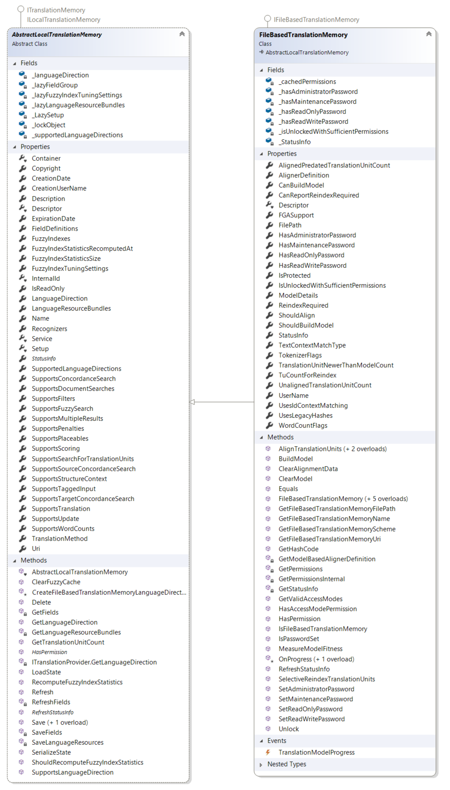

Working with File-based Translation Memories
This section explains how to work with file-based translation memories.
File-based translation memories
A file-based translation memory is an ITranslationMemory stored in a file with the .sdltm extension. It is designed for single-user access and supports one language direction. You define the language direction when you create the translation memory, and you cannot change it later.
File-based translation memories use the FileBasedTranslationMemory class. This class inherits from AbstractLocalTranslationMemory, the base class for file-based and in-memory translation memories such as InMemoryTranslationMemory.

Password protection
File-based translation memories support password protection for specific access levels. The translation memory stores each password securely. To set a password for a lower access level, you must first set the passwords for all higher access levels. If you protect a translation memory with passwords, you must define passwords for all available access levels, and anyone who opens the translation memory must provide a password, including the administrator.
The following access levels can be protected by a password:
- Administrator password: Grants complete access to the translation memory and its contents.
- Maintenance password: Lets a maintenance user open the translation memory, view, edit, and delete translation units, and use the batch edit and delete tools. It does not allow imports or exports.
- Translator password: Lets a translator open the translation memory in the Editor view, edit and delete individual translation units, and add new translation units.
- Guest password: Lets a guest open the translation memory and work with its contents. Guests cannot edit or delete translation units, but they can add new units.
To access a password-protected translation memory, call the Unlock method and pass the password for the required access level.